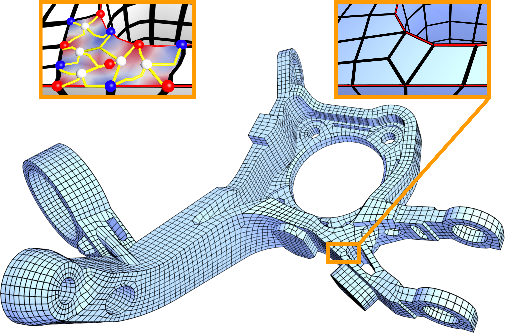
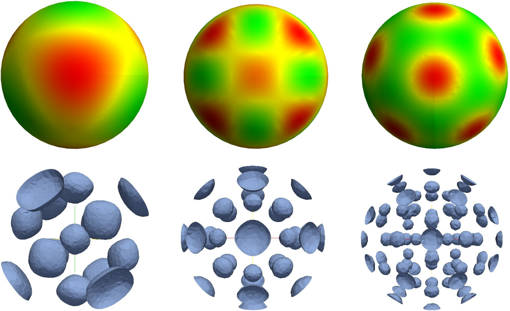
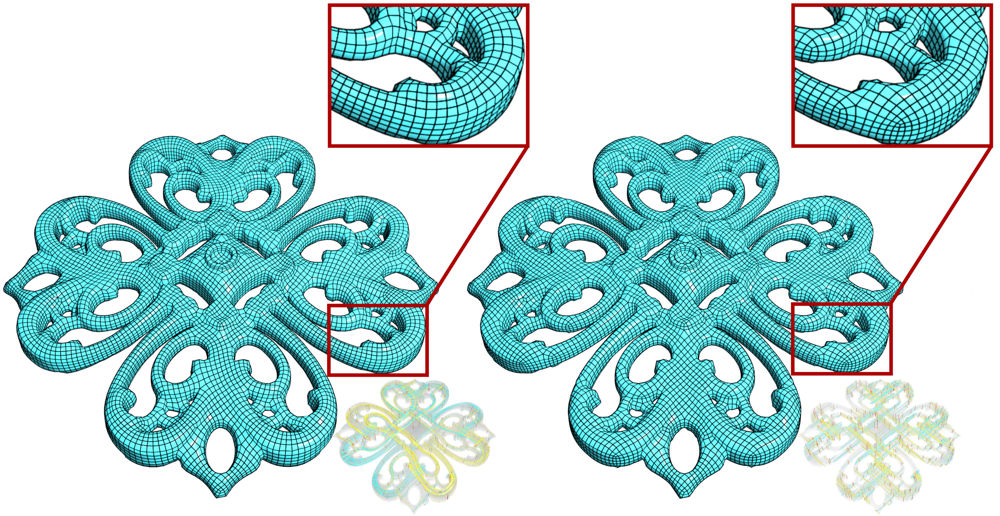
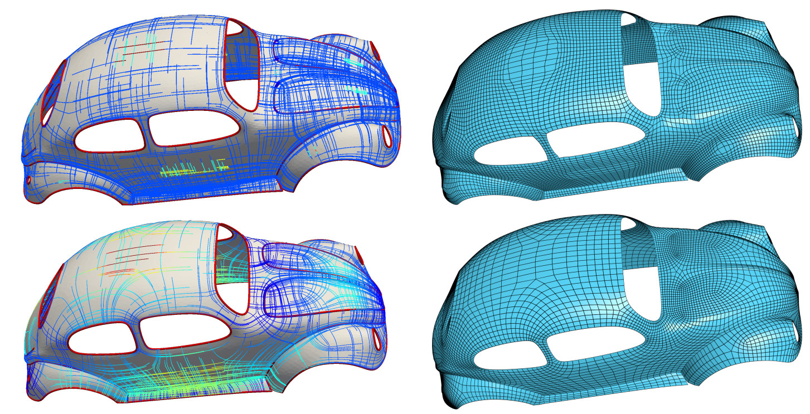

Xianzhong Fang
Ph.D. student
State key lab of CAD&CG
Email: fxzmin [at] 163 [dot] com , xzfang [at] zju [dot] edu [dot] cn
I'm a PhD student in Zhejiang University,
and will graduate in March 30th, 2019. My supervisor is Prof. Jin Huang.
|  |
Quadrangulation through Morse-Parameterization Hybridization ACM Transactions on Graphics (Proc. SIGGRAPH 2018) |
|  |
Harmonic Functions for Rotational Symmetry Vector Fields Computer Graphics Forum (Proc. PG 2016) |
|  |
All-Hex Meshing using Closed-Form Induced Polycube ACM Transactions on Graphics (Proc. SIGGRAPH 2016) |
|  |
Frame Field Generation through Metric Customization ACM Transactions on Graphics (Proc. SIGGRAPH 2015) |